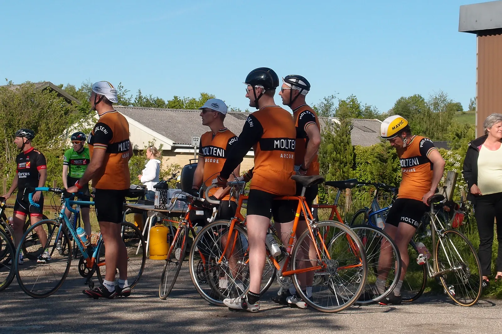
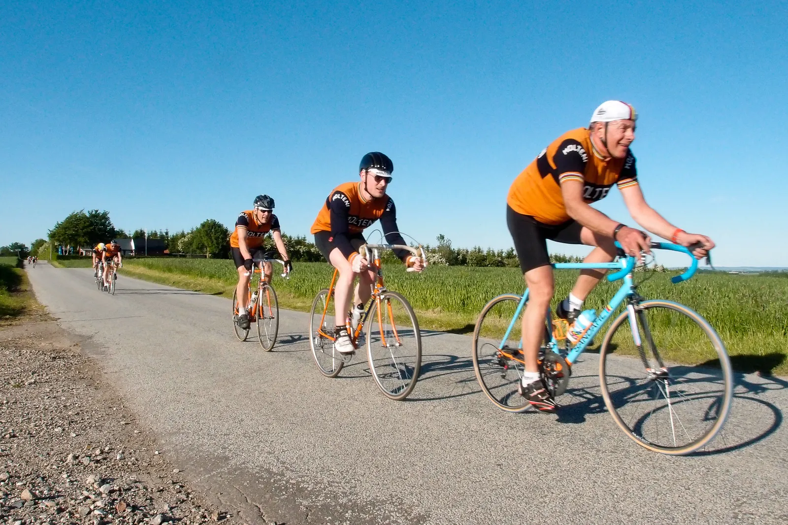

Eksprestoget skærer sig gennem DGI Holdøbet i Tilst

Trods rod i køreplanen skar Det Orange Eksprestog sig som et lyn gennem den lune sommeraften. I det stærkt besatte DGI Holdløb ved Tilst, med hele 25 hold til start, kørte Molteni-mandskabet sig til en hæderlig 13. plads.
Squadra Molteni, med Per Sandahl som kaptajn, Niels Bjørnsteen, Kasper Sørensen og debuterende Thure Fuhrmann Kjær var klar ved startstregen.

Tændte og helt klar.
Én som lige var ude at varme op
Det vil sige næsten – (og her undlades det, at fortælle yderligere om, at Squadra Molteni manglede én mand da starten gik.
Eigil Leegaard har givet pølser og øl – så det snakker vi ikke mere om)…
Men altså – efter lidt henholdende kørsel, skar Kaptajn Sandahl igennem og beordrede, at der skulle ventes – var Det Orange Eksprestog hurtigt fuldtalligt.
Og så blev der ellers gået til stålet
Efter en lettere nervøs første omgang (11 km) faldt der mere rytme over “formazione arancione på 2. og 3. omgang.

Per Sandahl kørte som sædvanlig med stor autoritet og styrke – og dirigerede tropperne rundt på den noget tekniske rute.
Niels Bjørnsteen, Kasper Sørensen og Eigil Leegaard agerede store dieselmotorer – og debuterende Thure Fuhrmann Kjær fik sin ilddåb.
Squadra Molteni kørte de 33 km i tiden 00:54:27, hvilke rakte til en 13. plads.
En tilfredsstillende præstation – i betragtning af, at der var lidt rod i sommerkøreplanen …
I mål stod Squadra Moltenis soigneure Maria Winther klar med hjemmebagt MOLTENI kage.
Se det er verdensklasse! Vi er heldige.
Tak for en herlig aften.
Forza Squadra Molteni